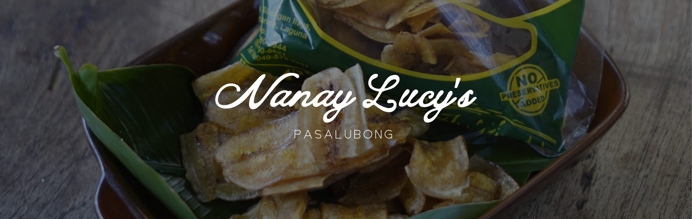

Nanay Lucy’s Pasalubong
About the
business
Nanay Lucy’s Pasalubong offers a selection of local treats and traditional favorites that make for easy and meaningful souvenirs. From brojas and merengue to hacovinas, Nanay Lucy brings together familiar Liliw delicacies that you can enjoy yourself or share with family and friends back home.
Details
- Contact
- (+63) 956 - 508 - 1136
- Operating Hours
- Monday – Sunday: 8:00 AM – 6:00 PM
- Follow us
Maps
Find your way
Explore the map and locate our featured
businesses with ease.
Works
Campaign gallery
More to
discover


Get in touch
For inquiries and assistance, feel free
to reach out to us.